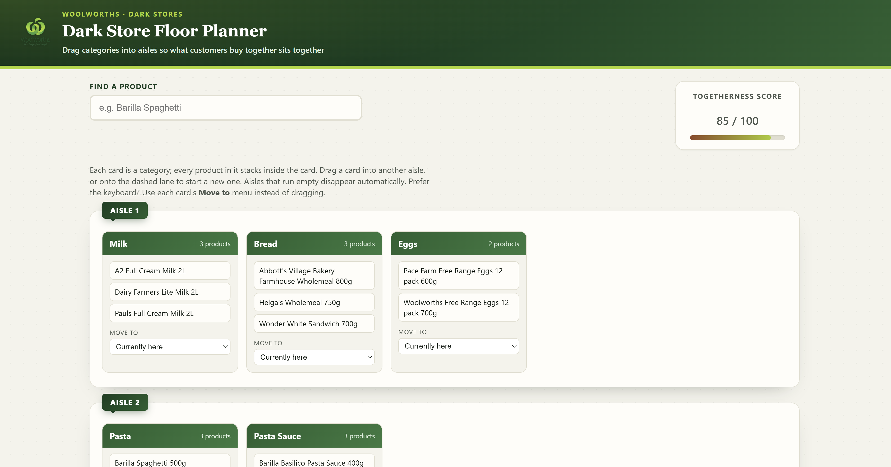
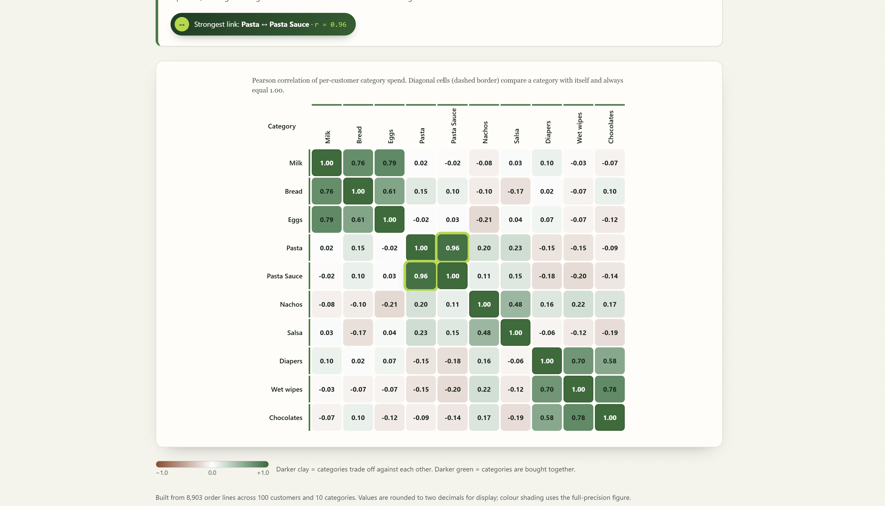

A data-driven tool for planning aisle layouts in Woolworths "dark stores" — analysing which product categories are bought together, then turning that analysis into an interactive, drag-and-drop floor planner.

Drag-and-drop aisle planner seeded from the correlation clusters — each card holds a category's products, aisles can be reorganised by drag or keyboard, and a live Togetherness Score tracks how well the layout groups categories that are bought together.

A 10×10 heatmap of Pearson correlation between category spend per customer, with the strongest link (Pasta ↔ Pasta Sauce, r = 0.96) called out and a diverging colour scale distinguishing categories bought together from categories that trade off.
Dark stores are optimised for fast, efficient order picking rather than browsing, so shelf placement should be driven by data, not intuition. This project analyses real order-line data to measure how strongly product categories correlate in customer baskets, then uses that correlation as the basis for an interactive planning tool.
Per-customer spend was aggregated by category in Excel, then Pearson correlation was computed between every category pair to reveal which products are genuinely bought together — that matrix directly seeds the initial aisle groupings in the planner.
Dark stores exist purely for order fulfilment, so a layout designed for shopper browsing doesn't serve the actual picking workflow.
Without a clear signal for which categories are bought together, aisle groupings were essentially guesswork.
Category managers needed a way to try different aisle arrangements and immediately see whether a layout got better or worse.
8,903 raw order lines cleaned and structured in Excel, with per-customer spend aggregated by category.
Pearson correlation computed between every pair of categories across all 100 customers, revealing which products are genuinely bought together.
The correlation matrix used to seed initial aisle groupings, placing highly-correlated categories together by default.
Built a drag-and-drop, keyboard-accessible floor planner with a live togetherness score and product search, as a self-contained web app.
These two categories correlate at r = 0.96 — by far the strongest pairing in the dataset, and a clear must-group-together aisle decision.
Diapers, Wet Wipes, and Chocolates correlate strongly together (0.58–0.78) — an unexpected but consistent basket pattern worth acting on.
Milk, Bread, and Eggs correlate at 0.61–0.79, confirming the intuitive breakfast-basket grouping with real data.
Nachos and Salsa correlate at just 0.48 — a sensible pairing, but far weaker than the Pasta/Pasta Sauce or baby-care clusters.
With a 0.96 correlation, Pasta and Pasta Sauce should always share an aisle regardless of other layout changes.
The Diapers/Wet Wipes/Chocolates cluster is a genuine, data-backed pairing worth trialling even though it isn't an obvious category grouping.
Use the score as a simple KPI whenever the layout changes, to make sure new arrangements aren't quietly hurting pick efficiency.
The Move To dropdown makes the planner usable without a mouse — worth preserving as the tool scales to more categories and pickers.
Buying patterns shift seasonally — recomputing correlations periodically would keep aisle groupings aligned with current behaviour.
Expanding beyond 10 categories and 100 customers would surface finer-grained clusters and sharpen the planner's recommendations.